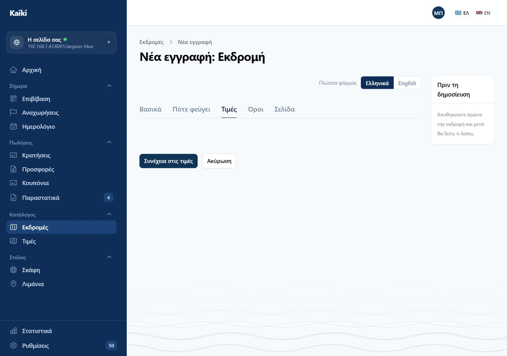
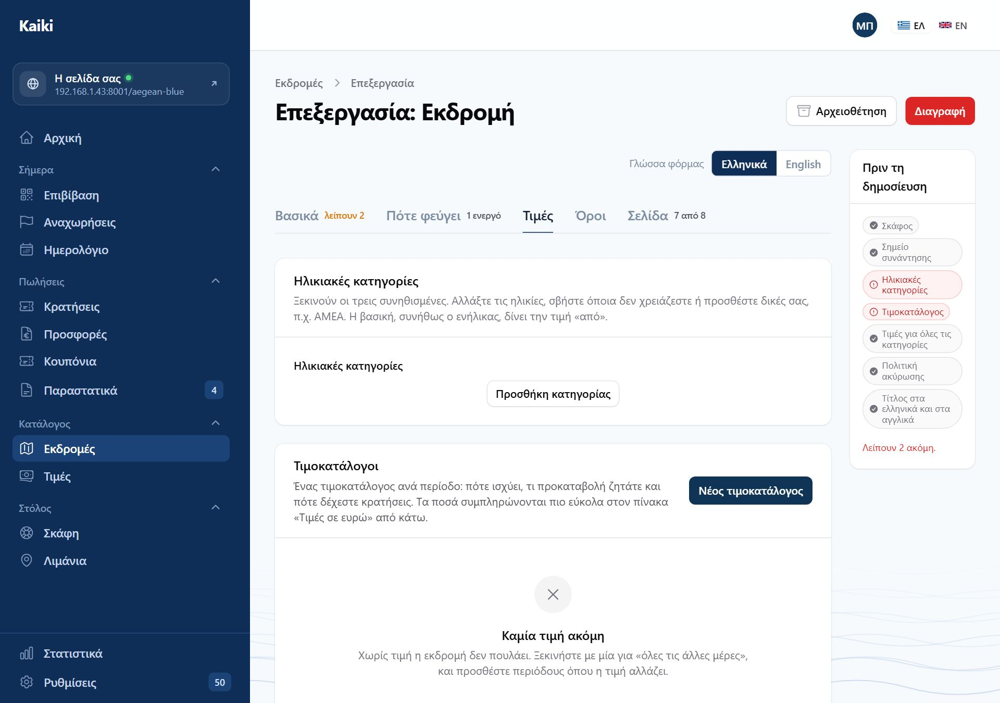
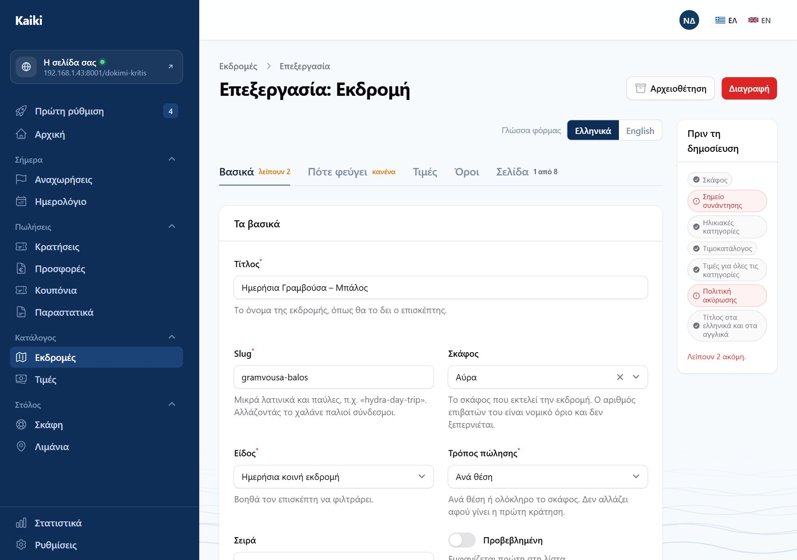

Kaiki
Πώς φτιάχνετε καινούργια εκδρομή, καρτέλα προς καρτέλα, και πώς αλλάζετε με ασφάλεια μία που ήδη πουλάει.
Σεπτέμβριος 2026
Οι εικόνες είναι πραγματικές οθόνες, τραβηγμένες αυτόματα από το ίδιο το πρόγραμμα.
Τα ονόματα και οι τιμές σε αυτές είναι δοκιμαστικά.
Τα πρώτα δύο κεφάλαια είναι για να ξέρετε τι χρειάζεστε πριν ανοίξετε τη φόρμα. Μετά ακολουθούν τα επτά βήματα με τη σειρά που τα κάνετε. Τα τελευταία τρία κεφάλαια είναι για μια εκδρομή που υπάρχει ήδη — τι αλλάζει με ασφάλεια, τι όχι, και πώς τη βγάζετε από την πώληση.
Μια εκδρομή δεν στέκεται μόνη της. Χρειάζεται ένα σκάφος για να εκτελεστεί, ένα λιμάνι για να φύγει, έναν τιμοκατάλογο για να κοστολογηθεί και μια πολιτική ακύρωσης για να πουληθεί. Αν λείπει κάτι από αυτά, η φόρμα σάς αφήνει να γράψετε, αλλά η εκδρομή δεν δημοσιεύεται.
| Τι | Πού φτιάχνεται | Χρειάζεται; |
|---|---|---|
| Σκάφος | Στόλος → Σκάφη | Ναι. Ο αριθμός επιβατών του είναι νόμιμο όριο για την εκδρομή. |
| Λιμάνι / σημείο συνάντησης | Στόλος → Λιμάνια | Ναι, για να ξέρει ο επισκέπτης πού θα βρεθείτε. |
| Πολιτική ακύρωσης | Κατάλογος → Πολιτικές ακύρωσης | Ναι — είτε δική της, είτε η προεπιλεγμένη σας. |
| Περίοδος (σεζόν) | Κατάλογος → Περίοδοι | Όχι. Μόνο αν η τιμή αλλάζει μέσα στη χρονιά. |
| Τιμοκατάλογος | Μέσα στην ίδια την εκδρομή, καρτέλα «Τιμές» | Ναι, αλλά όχι από πριν: φτιάχνεται εκεί, στο βήμα 4. |
Μπορείτε να ξεκινήσετε την εκδρομή και να γυρίσετε. Η εκδρομή αποθηκεύεται ως πρόχειρη και η κάρτα «Πριν τη δημοσίευση» στα δεξιά σάς λέει κάθε στιγμή τι λείπει ακόμη.
Όλη η εκδρομή είναι μία σελίδα με πέντε καρτέλες. Δεν υπάρχουν κρυφές οθόνες: τα δρομολόγια, οι τιμές και τα πρόσθετα είναι μέσα στην καρτέλα όπου ανήκουν.
| Καρτέλα | Τι κρατάει |
|---|---|
| Βασικά | Τίτλος, slug, σκάφος, είδος, τρόπος πώλησης, σειρά, προβεβλημένη. |
| Πότε φεύγει | Διάρκεια, ώρα, προσέλευση, σημείο συνάντησης, πόσα άτομα, δρομολόγια. |
| Τιμές | Ηλικιακές κατηγορίες, ο πίνακας των τιμών σε ευρώ, τα πρόσθετα. |
| Όροι | Πολιτική ακύρωσης, ΦΠΑ, στοιχεία επιβατών, επιπλέον ερωτήσεις. |
| Σελίδα | Ό,τι διαβάζει ο επισκέπτης: περίληψη, περιγραφή, πρόγραμμα, Google. |
Δίπλα στο όνομα κάθε καρτέλας εμφανίζεται μια μικρή ένδειξη μόλις αποθηκευτεί η εκδρομή: «λείπουν 2» στα Βασικά, «1 ενεργό» ή «κανένα» στο Πότε φεύγει, «7 από 8» στη Σελίδα. Είναι ο γρήγορος τρόπος να δείτε πού να πάτε.

| Τρόπος | Τι σημαίνει | Τι αλλάζει στη φόρμα |
|---|---|---|
| Ανά θέση | Κοινή εκδρομή, ο καθένας κλείνει θέσεις. | Έχει ηλικιακές κατηγορίες, πίνακα τιμών και δρομολόγια. |
| Ολόκληρο το σκάφος | Ιδιωτική ναύλωση: ένας πελάτης παίρνει το σκάφος. | Χωρίς κατηγορίες και δρομολόγια· έχει ώρα και, προαιρετικά, ελεύθερη ώρα. |
| Κατόπιν προσφοράς | Ο επισκέπτης ρωτάει, εσείς στέλνετε προσφορά. | Δεν πουλάει μόνη της· η κράτηση γίνεται από τις «Προσφορές». |
Όσο το πεδίο είναι άδειο, η καρτέλα «Τιμές» δείχνει μόνο τα κουμπιά και τίποτε άλλο — δεν έχει χαλάσει, απλώς δεν ξέρει ακόμη αν θα σας ζητήσει ηλικιακές κατηγορίες ή την τιμή ενός σκάφους. Συμπληρώστε τα Βασικά και όλα εμφανίζονται.
Μια εκδρομή που πουλήθηκε ανά θέση και γίνεται ναύλωση αφήνει πίσω της αναχωρήσεις που μετρούν θέσεις οι οποίες δεν υπάρχουν πια, και κρατήσεις των οποίων η τιμή υπολογίστηκε με άλλους κανόνες. Αν χρειαστεί να αλλάξει ο τρόπος πώλησης, φτιάξτε καινούργια εκδρομή και βγάλτε την παλιά εκτός πώλησης.

Ο λόγος είναι πρακτικός: ο πίνακας τιμών χρειάζεται κατηγορίες που υπάρχουν και περιόδους που υπάρχουν, και τίποτα από τα δύο δεν έχει αποθηκευτεί πριν πατήσετε το κουμπί. Μέχρι να δημοσιευτεί, η εκδρομή είναι πρόχειρη: δεν την βλέπει κανείς και δεν πουλάει.
Από εδώ και πέρα δουλεύετε πάνω στη σελίδα επεξεργασίας, και κάθε καρτέλα έχει περισσότερα απ' όσα είχε πριν.


Χωρίς ενεργό δρομολόγιο η εκδρομή δεν έχει καμία μέρα να πουλήσει, και η ένδειξη δίπλα στην καρτέλα το λέει με πορτοκαλί: «κανένα». Ένα δρομολόγιο «Καθημερινά, 08:30, από 16 Αυγ 2026, χωρίς λήξη» είναι ό,τι χρειάζεται μια εκδρομή που τρέχει όλη τη σεζόν.
Δεν υπάρχουν δρομολόγια: ο πελάτης διαλέγει μέρα. Αν θέλετε να διαλέγει και ώρα, ανάψτε το «Ελεύθερη ώρα αναχώρησης» και ορίστε το παράθυρο «νωρίτερα από» / «αργότερα από».

Η καρτέλα έχει τέσσερα πράγματα, με αυτή τη σειρά: ποιοι ταξιδεύουν (ηλικιακές κατηγορίες), πότε ισχύει τι (τιμοκατάλογοι), πόσο πληρώνει ο καθένας (ο πίνακας σε ευρώ), και τι πουλάτε δίπλα στη θέση (πρόσθετα).


Ένας τιμοκατάλογος ανά περίοδο: πότε ισχύει, τι προκαταβολή ζητάτε και πότε δέχεστε κρατήσεις. Ο πρώτος που φτιάχνετε είναι αυτός που ισχύει όταν καμία περίοδος δεν ταιριάζει — «όλες τις άλλες μέρες» — και είναι ο μόνος που χρειάζεται μια εκδρομή με μία τιμή όλο τον χρόνο.
Προσθέτετε δεύτερο μόνο όταν η τιμή αλλάζει: μια θερινή περίοδος, ένα τριήμερο. Η περίοδος φτιάχνεται μία φορά στο Κατάλογος → Περίοδοι και μετά είναι διαθέσιμη σε κάθε εκδρομή.

Τα γρήγορα κουμπιά κάτω από κάθε κατηγορία — Ίδια, Μισή τιμή, −30%, Δωρεάν — γράφουν ευρώ υπολογισμένα από τη βασική κατηγορία. Αποθηκεύεται το ποσό, όχι το ποσοστό: αν αργότερα ανεβάσετε την τιμή του ενήλικα, η τιμή του παιδιού μένει εκεί που την αφήσατε.
Το «Αποθήκευση τιμών» κάτω από τον πίνακα αποθηκεύει τις τιμές· η «Αποθήκευση» στο τέλος της σελίδας αποθηκεύει την εκδρομή. Δουλεύουν χωριστά, οπότε μπορείτε να διορθώσετε μια τιμή χωρίς να ξανασώσετε όλη τη φόρμα.
Η προκαταβολή και οι προθεσμίες πληρωμής δεν είναι στον πίνακα: ανήκουν στον τιμοκατάλογο, πιο πάνω στην ίδια καρτέλα. Ο πίνακας γεμίζει μόνο τα κελιά που οι τιμοκατάλογοι δημιουργούν.


Όλα εδώ είναι προαιρετικά, και ό,τι μείνει κενό απλώς δεν εμφανίζεται — δεν αφήνει άδειο κουτί στη σελίδα.
Η σελίδα της εκδρομής δείχνει γκαλερί, αλλά σήμερα οι φωτογραφίες μπαίνουν μόνο με εισαγωγή από WooCommerce ή από τα δοκιμαστικά δεδομένα — δεν υπάρχει πεδίο ανεβάσματος στη φόρμα. Οι φωτογραφίες σκαφών και λιμανιών ανεβαίνουν κανονικά, στις δικές τους οθόνες.

| Τι ζητάει | Πού το φτιάχνετε |
|---|---|
| Σκάφος | Βασικά |
| Σημείο συνάντησης | Πότε φεύγει |
| Ηλικιακές κατηγορίες | Τιμές |
| Τιμοκατάλογος | Τιμές, ενότητα «Τιμοκατάλογοι» |
| Τιμές για όλες τις κατηγορίες | Τιμές — τα κόκκινα κελιά του πίνακα |
| Πολιτική ακύρωσης | Όροι |
| Τίτλος στα ελληνικά και στα αγγλικά | Βασικά, με τον διακόπτη γλώσσας |

Όσο μένει κόκκινο, το κουμπί «Δημοσίευση» αρνείται και σας λέει τι λείπει — και κρατάει ό,τι γράψατε. Όταν όλα γίνουν πράσινα, η δημοσίευση βάζει την εκδρομή σε πώληση: εμφανίζεται στον κατάλογό σας και δέχεται κρατήσεις.

Τα περισσότερα αλλάζουν ελεύθερα: τίτλος, περιγραφή, πρόγραμμα, φωτογραφίες, πρόσθετα, ερωτήσεις. Τέσσερα θέλουν προσοχή, και ένα δεν πρέπει να αλλάξει καθόλου.
| Αλλαγή | Τι γίνεται πραγματικά |
|---|---|
| Τιμή | Ισχύει από τη στιγμή που την αποθηκεύετε και μετά. Οι κρατήσεις που έχουν ήδη γίνει κρατούν τη δική τους τιμή παγωμένη — δεν ξαναϋπολογίζονται ποτέ. |
| Ηλικιακή κατηγορία που σβήνετε | Φεύγει μαζί με τις τιμές της. Οι κρατήσεις που την είχαν δεν χαλάνε: κρατούν δικό τους αντίγραφο της κατηγορίας. |
| Μέγιστα άτομα | Περνάει στις μελλοντικές αναχωρήσεις που δεν έχουν πουλήσει ούτε μία θέση. Όσες έχουν κρατήσεις κρατούν τη χωρητικότητα που είχαν όταν δημιουργήθηκαν και εμφανίζονται στον «Έλεγχο αναχωρήσεων» για να τις δείτε μία-μία — γιατί το να μειωθεί η χωρητικότητα μιας αναχώρησης που έχει πουλήσει είναι ο τρόπος να χάσει τη θέση του κάποιος που πλήρωσε. |
| Slug | Χαλάει κάθε παλιό σύνδεσμο: email που έχετε στείλει, αναρτήσεις, το Google. Αλλάξτε το μόνο σε εκδρομή που δεν έχει κυκλοφορήσει. |
| Τρόπος πώλησης | Μην τον αγγίξετε μετά την πρώτη κράτηση. Φτιάξτε καινούργια εκδρομή. |
Κάθε κράτηση κρατάει το δικό της αντίγραφο από την τιμή, τις κατηγορίες και την πολιτική ακύρωσης, όπως ήταν τη μέρα που έγινε. Είναι επίτηδες: ο πελάτης πλήρωσε ό,τι είδε, και ένα παραστατικό δεν ξαναγράφεται επειδή αλλάξατε τιμοκατάλογο τον Οκτώβριο.
| Κουμπί | Τι κάνει | Πότε |
|---|---|---|
| Εκτός πώλησης | Σταματάει τις νέες κρατήσεις και η σελίδα της παύει να φορτώνει. Οι κρατήσεις που υπάρχουν δεν θίγονται. Επιστρέφει με το «Ξανά σε πώληση». | Προσωρινά: γέμισε η σεζόν, λείπει το σκάφος, θέλετε να τη δουλέψετε. |
| Αρχειοθέτηση | Φεύγει οριστικά από τις πωλήσεις και από τις λίστες. Οι κρατήσεις της μένουν όλες. Επαναφέρεται ως πρόχειρη. | Μια εκδρομή που δεν θα ξανακάνετε. |
| Διαγραφή | Κρύβει την εγγραφή. Η εκδρομή μπορεί να επανέλθει, αλλά η σελίδα της και οι σύνδεσμοί της σταματούν αμέσως. | Μόνο για κάτι που φτιάχτηκε κατά λάθος και δεν πούλησε ποτέ. |
Για εκδρομή με ιστορικό, η αρχειοθέτηση είναι η σωστή κίνηση — κρατάει τα βιβλία σας ολόκληρα.
| Ερώτηση | Απάντηση |
|---|---|
| Γιατί η καρτέλα «Τιμές» είναι άδεια; | Δεν έχετε διαλέξει τρόπο πώλησης, ή δεν έχετε αποθηκεύσει ακόμη την εκδρομή. |
| Γιατί ο πίνακας τιμών δεν έχει στήλες; | Δεν υπάρχει ενεργός τιμοκατάλογος. Φτιάξτε έναν από το «Νέος τιμοκατάλογος», πιο πάνω στην ίδια καρτέλα. |
| Γιατί δεν εμφανίζεται το κουμπί «Δημοσίευση»; | Η εκδρομή είναι ήδη σε πώληση. Αν είναι πρόχειρη και το κουμπί αρνείται, δείτε τα κόκκινα της λίστας. |
| Έβαλα δρομολόγιο και δεν βλέπω αναχωρήσεις. | Δείτε ότι το δρομολόγιο είναι ενεργό και ότι η περίοδός του περιλαμβάνει τις μέρες που κοιτάτε. |
| Πώς βάζω διαφορετική τιμή τον Αύγουστο; | Φτιάχνετε περίοδο στο «Κατάλογος → Περίοδοι», μετά τιμοκατάλογο γι' αυτήν στην εκδρομή· γίνεται στήλη στον πίνακα. |
| Πώς γράφω τα αγγλικά; | Με τον διακόπτη «Γλώσσα φόρμας» πάνω από τις καρτέλες. Ο αγγλικός τίτλος είναι υποχρεωτικός για δημοσίευση. |
| Πού είναι η προκαταβολή; | Στον τιμοκατάλογο, όχι στον πίνακα τιμών — εκεί ορίζεται και η προθεσμία εξόφλησης. |
Αυτός ο οδηγός καλύπτει μόνο την εκδρομή. Για τα σκάφη, τα λιμάνια, τις κρατήσεις και τα υπόλοιπα, δείτε το «Εγχειρίδιο του διοργανωτή».